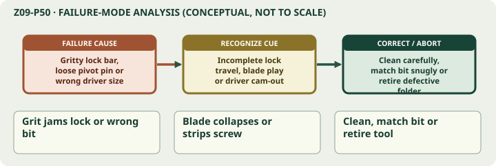

Z09-P50 · Tools and construction · New manuscript
Diagnose jammed multi-tool locks, stripped fasteners and snapped pins
Spot mechanical fastener and pivot wear before a folding tool collapses on fingers or strips vital stove/gear screws.
When it applies · Field and pre-trip checks of folding knives, multi-tools, stove valves, snowshoe bindings and shelter hardware.
Equipment · Clean brush, matched screwdriver/hex bit and spare field pins or zip ties.

Actions
- Check folding tool locks for grit buildup, incomplete lock-bar travel or wobbly pivot pins—never force a gritty stuck blade open by gripping the sharp edge with bare fingers.[K01, K02, ED]
- Match screwdriver tips and hex wrenches snugly to fastener heads; loose undersized drivers cam out, stripping screw slots permanently and jabbing palms.[K01, K02]
- Inspect snowshoe clevis pins, ski/pole locks and stove linkages for bent clips or backing-out screws before leaving camp.[K07, E02, ED]
Failure recognition · Trying to turn a stuck Phillips stove screw with a pointed knife tip, snapping the blade point and mangling the screw head beyond repair.[K01, K02, K07]
Verify · Confirm clean positive lock seating, matched driver fit and tight pins/fasteners across critical gear before use.[K01, K07, ED]
Stop or change course · Retire any folding tool with an unreliable lock or cracked pivot and switch to a fixed backup or alternate gear plan.[K01, K02]
Evidence and editorial notes
- E02 · NPS · Ten Essentials (current web edition)
- Section: Navigation; insulation; emergency shelter; emergency food and water · Conditions: Outdoor trips; adjust kit to season and route
Support: Carry essential systems including navigation, insulation, light, water and emergency shelter.
Limitations: Carrying items without practice or cold-weather verification does not ensure readiness. · Conflicting evidence: None; baseline kit system architecture.
Editorial note: Supports failure-mode packing and kit verification cards. · Specialist reviewer: Field education and search and rescue
Primary source · checked 2026-11-24 - K01 · OSHA · Hand and Power Tools Safety and Health Topics (current web edition)
- Section: Hand Tools > General Safety Rules · Conditions: Use of knives, saws, axes, hammers and hand tools
Support: Keep hand tools in good condition, use the right tool for the job, examine each tool for damage before use, operate according to instructions and wear appropriate personal protective equipment.
Limitations: General occupational rules do not replace task-specific forestry or field-tool training. · Conflicting evidence: None; baseline tool safety framework.
Editorial note: Anchors tool selection, pre-use inspection and operating boundary cards in Z09. · Specialist reviewer: Tool safety and occupational safety
Primary source · checked 2026-11-24 - K02 · OSHA · Hand and Power Tools (OSHA 3080) (agency PDF)
- Section: Hand Tools > Knives, Chisels, Impact and Wrenches · Conditions: Manual cutting, striking and prying operations
Support: Direct cutting blades away from the body and bystanders, never use cracked wooden handles or mushroomed striking heads, and do not substitute wrenches or blades as pry bars.
Limitations: Does not specify material tensile ratings for improvised handles. · Conflicting evidence: None; directly informs safe cutting and impact-tool failure cards.
Editorial note: Prevents blade slip, splintered-handle and spalling-metal injuries. · Specialist reviewer: Tool safety and wilderness medicine
Primary source · checked 2026-11-24 - K07 · NPS · Ten Essentials (current web edition)
- Section: Repair Kit and Tools · Conditions: Field equipment repair during backcountry travel
Support: Carry a route-appropriate repair kit (duct/gear tape, multi-tool, cordage, patch supplies) matched to shelter, pack, stove and water gear; verify compatibility before departure.
Limitations: Field patches restore temporary function and do not restore full original storm or load ratings. · Conflicting evidence: None; aligns with E02 and E20.
Editorial note: Grounds field-repair kits, temporary patches and equipment failure limits. · Specialist reviewer: Field equipment safety
Primary source · checked 2026-11-24
Source lineage · OSHA 3080 and field equipment maintenance; new manuscript · Classification · New manuscript.